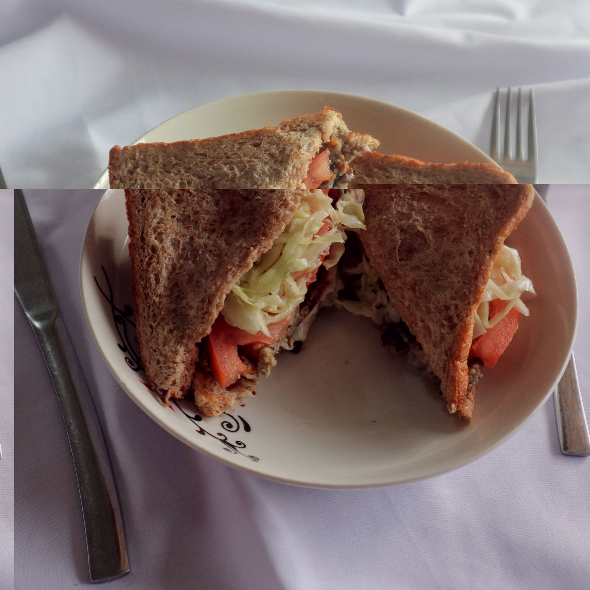

Meatless Burger Patty
Made your soy milk at home and have no idea how to settle the pulp? Let’s transform it into some nice dishes! What is Okara?Okara (おから) is made of soybean pulp, which is the remaining of the soy milk after being blended into soy beans. As the byproduct of
